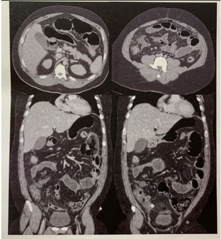
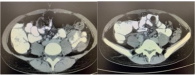
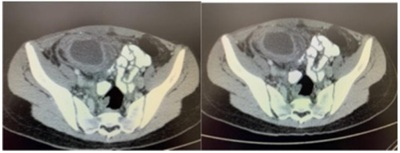
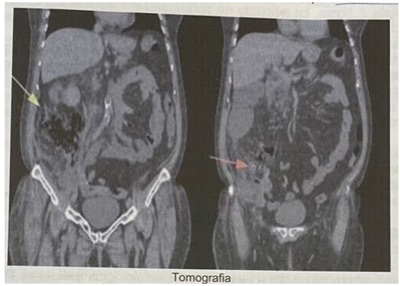
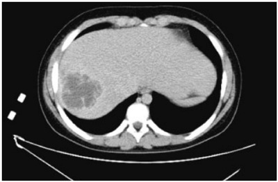
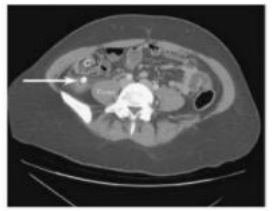
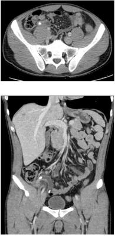
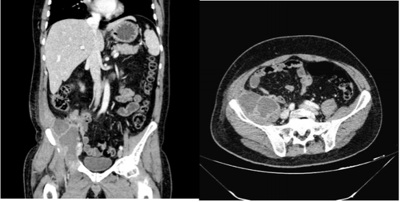

Questão 1 · Tratamento · 4000187483Homem, 35 anos de idade, procura pronto atendimento por dor em hipogástrico há 5 dias. Há dois dias, evoluiu com náuseas, vômitos e parada de eliminação de fezes e atos. Ao exame físico, encontra-se em regular estado geral, com pressão arterial 120x80mmHg, frequência cardíaca 94bpm e temperatura axilar 38,3ºC. Abdome globoso, doloroso à palpação em hipogástrio, sem massas palpáveis, sem hérnias inguinofemorais. Toque retal com pequena quantidade de fezes pastosas. Os exames laboratoriais evidenciam: hemoglobina 12,4g/dL (VR 3,0 - 16,9g/dL); leucócitos 16.700/mm³ (VR 4.000 - 10.000/mm³); proteína C reativa 143mg/L (VR < 3mg/L); creatinina 0,9mg/dL (VR 0,6 - 1,3mg/dL); ureia 32mg/dL (VR 10 - 50mg/dL); sódio 143mEq/L (VR 135 - 145mEq/L); potássio 4,1mEq/L (VR 3,6 - 5,2mEq/L). Urina tipo I: hemácias ausentes, leucócitos 40.000/mm³ (VR < 10.000/mm³), nitrito negativo. Realizou a tomogra a computadorizada de abdome total, mostrada a seguir: O tratamento indicado para este paciente, além de administração de antibióticos, é:

A Drenagem por radiologia intervencionista.
B Passagem de sonda nasogástrica e tratamento conservador.
C Dieta laxativa e clister glicerinado.
D Abordagem cirúrgica.
Questão 2 · Anatomia · Apendicite Aguda · Manif estações Clínicas e Exame Físico · 4000187036Sobre as doenças do apêndice, assinale a opção ERRADA.
A A dor periumbilical que costuma ocorrer no início do quadro de apendicite aguda pode ser explicada pela distensão luminal do apêndice após a obstrução da sua luz por um apendicolito.
B A dor abdominal na apendicite aguda costuma migrar para a fossa ilíaca direita quando ocorre isquemia do órgão e sequencialmente necrose e perfuração.
C O ponto de McBurney localiza-se a 1/3 da distância em uma linha traçada entre a espinha ilíaca ântero-superior e o umbigo.
D A laparoscopia pode ser usada de forma propedêutica nos casos que o exame clínico associado aos exames complementares não fecham o diagnóstico.
E A apendicectomia por videolaparoscopia leva a menos infecção da ferida operatória e menor tempo de internamento hospitalar quando comparada com a apendicectomia aberta.
Questão 3 · Diagnósticos Dif erenciais · Apendicite Aguda Não Complicada · 4000186681Paciente do sexo masculino, 25 anos, em acompanhamento de uma leucemia recentemente tratada, relata dor abdominal há cerca de 48 horas, inicialmente difusa que se localizou na Fossa Ilíaca Direita (FID) e posteriormente difusa novamente. Exames laboratoriais da admissão mostram: leucócitos totais: 15.500; Hemoglobina: 13,5gr/dl; urina rotina normal. Ao exame clínico apresenta FC: 98bpm, FR: 17irpm, abdome levemente distendido, com descompressão dolorosa na FID. A radiogra a de tórax em ortostatismo não mostra pneumoperitônio e radiogra a de abdome mostra alça sentinela na FID. Em relação ao caso clínico descrito, é CORRETO afirmar que:
A A antibioticoterapia para gram positivos deve ser iniciada apenas após a laparotomia exploradora comprovar o diagnóstico de apendicite aguda, para evitar resistência bacteriana.
B Pacientes com imunodeficiências, como esse devem sempre passar por tentativa de tratamento clínico da possível apendicite aguda, devido os maiores riscos do procedimento cirúrgico nesses pacientes.
C Diante dos sinais e sintomas típicos para o diagnóstico de apendicite aguda, o tratamento mais adequado será encaminhamento imediato ao bloco cirúrgico, para realização da cirurgia, além de iniciar antibioticoterapia.
D Para esse caso clínico se torna obrigatória a realização de tomografia computadorizada de abdome, antes da abordagem cirúrgica.
Questão 4 · Escore de Alvarado · 4000186557Criança de 10 anos, masculino, subfebril, anorético há 24h com dor epigástrica inicialmente que migrou para FID onde persiste mantendo dor no local. No exame laboratorial (Hmg) identi ca-se leucocitose discreta com desvio à esquerda, assim como, descompressão brusca positiva em FID. Levando em consideração os critérios clínicos de ALVARADO para diagnóstico de apendicite aguda, qual alternativa estaria mais adequada ao interpretarmos os dados clínicos acima?
A 4 pontos, com estimativa de 50% de chance de apendicite aguda independente do sexo.
B 3 pontos, com estimativa de 75% de chance para homens e 25% para as mulheres.
C 9 pontos, com estimativa de 93% de chance para homens e 78% das mulheres.
D 15 Pontos, com estimativa de 98% de chance para homens e 75% das mulheres.
Revisar: possível letra faltando em enunciado
Questão 5 · Manif estações Clínicas e Exame Físico · 4000186229Paciente jovem, masculino, com história sugestiva de apendicite aguda, apresenta ao exame físico abdominal dor à palpação em fossa ilíaca direita, associada à descompressão brusca dolorosa, além de dor em quadrante inferior direito quando se palpa o quadrante inferior esquerdo. Estão presentes, respectivamente, os sinais de
A Blumberg e Rovsing.
B Rovsing e Blumberg.
C Blumberg e Obturador.
D Obturador e Rovsing.
Questão 6 · Apendicite Aguda Complicada · Apendicetomia Aberta x Apendicectomia Laparoscópica · 4000185793Apendicite Aguda Não Complicada Sobre a apendicite aguda é correto afirmar que:
A No escore diagnóstico de Alvarado estão incluídos exames laboratoriais, tais como proteína C reativa.
B Antibioticoterapia pós-operatória está indicada para pacientes com apendicite aguda nãocomplicada.
C A apendicectomia videolaparoscópica está associada a maior incidência de abscesso intraabdominal em casos de apendicites agudas com perfuração e necrose.
D O tratamento não-operatório pode ser indicado com bons resultados para aqueles pacientes que se apresentam com apendicolito nos exames de imagem.
Questão 7 · Diagnósticos Dif erenciais · Cirurgia · 4000185665A doença cirúrgica de maior incidência no abdome é a apendicite aguda, definida por in amação aguda do apêndice vermiforme devido obstrução obstrução da luz apendicular. Em relação à apendicite aguda assinale a alternativa correta:
A A obstrução da luz apendicular é determinada apenas por conteúdo fecal, chamados fecalitos.
B Temos sinais clássicos observados ao exame físico como por exemplo o sinal de McBurney que é caracterizado por dor no quadrante inferior direito, quando se exerce pressão no abdome a partir do quadrante inferior esquerdo.
C O exame de imagem padrão ouro é a ultrassonografia uma vez que mostra imagem tubular com paredes espessadas na região apendicular e identifica o fecalito ocluindo a luz apendicular.
D São condições de diagnósticos diferenciais as doenças como pneumonia, porfiria, colecistite aguda, doenças inflamatórias intestinais, infecção urinária e ruptura de folículo ovariano.
E O tratamento da apendicite é cirúrgico, não devendo ser postergado em nenhuma hipótese ou condição, uma vez que há piora do prognóstico do paciente.
Questão 8 · Apendicite Crônica · 4000185417Alguns pacientes apresentam evolução de quadro de apendicite aguda para perfuração apendicular com bloqueio local (não difuso); este subgrupo costuma procurar o serviço médico com vários dias de evolução, apresentando plastrão palpável em fossa ilíaca direita e, por vezes, complicações locais com abscesso. Tais pacientes, após confirmação diagnóstica por exame de imagem (tomografia), podem se beneficiar, atualmente, de qual das condutas seguintes?
A Apendicectomia de intervalo.
B Apendicectomia tradicional por incisão Mc Burney.
C Melhor elucidação diagnóstica por colonoscopia.
D Hemicolectomia direita.
E Apendicectomia por via endoscópica.
Questão 9 · Fisiopatologia · Cirurgia · 4000184513Assinale a alternativa que apresenta a causa de apendicite aguda mais comumente encontrada em adultos.
A verminose
B neoplasia
C criptogênica
D hiperplasia linfoide
E obstrução por fecálitos
Questão 10 · Apendicetomia Aberta x Apendicectomia Laparoscópica · Cirurgia · 4000184505Quanto à técnica operatória em cirurgias de apendicite aguda, assinale a alternativa que apresenta corretamente os locais das punções dos trocateres na técnica laparoscópica.
A três punções de 5 mm: duas à esquerda e uma à direita.
B uma punção na região periumbilical de 10 mm, uma de 5 mm no hipogástrio e uma de 12 mm no flanco esquerdo.
C uma punção de 10 mm no flanco esquerdo, uma de 5 mm no umbigo e uma de 12 mm no hipogástrio.
D duas punções de 10 mm no umbigo e no hipocôndrio direito e uma de 5 mm no flanco esquerdo.
E uma punção de 10 mm no umbigo, uma de 5 mm no hipogástrio e uma de 12 mm no hipocôndrio direito.
Questão 11 · Cirurgia · Apendicite Aguda Não Complicada · 4000183439Nos últimos 5 anos, mudanças foram sugeridas no tratamento da apendicite não-complicada. O dilema “antibioticoterapia X cirurgia” foi avaliado por vários estudos randomizados. O que podemos concluir desses estudos?
A O tratamento clínico foi superior em pacientes jovens, porém com maior custo.
B O tratamento clínico foi superior à apendicectomia aberta e inferior à apendicectomia laparoscópica.
C O tratamento clínico foi superior à cirurgia, quando o Meropenem foi utilizado.
D A taxa de perfuração apendicular foi de 70% no tratamento clínico.
E A taxa de recorrência da apendicite, no tratamento clínico, foi em torno de 30%.
Questão 12 · Gestantes · Obstetrícia · Urgências Abdominais · 4000183143Gestante de 10 semanas procura o pronto socorro queixando-se de dor abdominal há 2 dias, periumbilical com irradiação para região lombar e fossa ilíaca direita, associada à inapetência. Há 4 horas, iniciou quadro de febre (38oC), vômitos e parada de eliminação de gases e fezes. Nega alteração do hábito urinário, disúria ou polaciúria. Ao ultrassom, gestação tópica, feto vivo, sem sinais de descolamento ovular, presença de discreta quantidade de líquido livre em região anexial direita. Hemograma com 18.800 leucócitos, desvio até metamielócitos. O Hospital não dispõe de ressonância nuclear magnética e não é possível transferência hospitalar neste momento. Qual é a conduta recomendada?
A Tomografia computadorizada de abdome para elucidar diagnóstico.
B Antibioticoterapia intravenosa e reavaliação clínica após 24 horas.
C Analgesia plena, antiemético, enteroclisma e reavaliação após evacuação.
D Cirurgia de urgência, preferencialmente por via laparoscópica.
Questão 13 · Manif estações Clínicas e Exame Físico · Apendicetomia Aberta x Apendicectomia Laparoscópica · 4000183079Tratamento Paciente do sexo feminino, 13 anos, refere quando de dor tipo cólica, em epigástrio, que migrou para FID, com aumento progressivo de intensidade, associada a náuseas e vômitos. Evolução de 48 horas. Nega febre e diarreia. Refere menarca há cerca de 6 meses, com ciclos regulares. Nega leucorréia. Seu abdome é plano, ácido, doloroso à palpação profunda em FID, com sinais de Blumberg e Rovsing positivos. Sobre o caso acima, assinale a alternativa
A Dados como a idade da paciente, o ciclo menstrual regular e o tempo de evolução do quadro agudo nos permitem afirmar que o tratamento não-cirúrgico com antibioticoterapia pode ser efetivo para o quadro acima.
B A presença do sinal de Rovsing indica laparotomia exploradora imediata.
C A abordagem laparoscópica pode ser tanto diagnóstica quanto terapêutica para o caso acima.
D A ausência de febre exclui o diagnóstico de abdome agudo inflamatório, estando indicada investigação com tomografia computadorizada de abdome.
Questão 14 · Urgências Abdominais Abdome Agudo · Exames Complementares · Avaliação da Dor Abdominal · 4000182721Sobre a avaliação de dor abdominal, é CORRETO afirmar que:
A Paciente masculino, com dor epigástrica que migra para a fossa ilíaca direita, início há 24h, sinal de Bloomberg positivo, tem indicação de cirurgia sem necessidade de exame de imagem comprobatório.
B Paciente masculino, etilista, com dor abdominal difusa, abdômen em tábua, raio-x de abdômen agudo com pneumoperitoneo, tem indicação de cirurgia após tomografia de abdômen comprobatória.
C O melhor exame para diagnosticar a colelitíase sintomática é a tomografia de abdômen.
D Crianças pré-escolares podem apresentar diverticulite de Meckel, com sintomas semelhantes ao da apendicite aguda e igual frequência de acometimento.
Questão 15 · Apendicite Aguda Complicada · 4000182355Homem de 38 anos de idade procura a unidade de emergência em virtude de dor abdominal há três semanas. Relata que a dor se localiza em fossa ilíaca direita e hipogástrio desde o início do quadro, com intensidade constante e moderada (4 em 10). Além disso, evoluiu com febre (38ºC) há dois dias. Sem outras queixas. Ao exame físico, apresenta frequência cardíaca de 85bpm, pressão arterial de 120x70mmHg, temperatura axilar de 36,5ºC e escala de coma de Glasgow de 15. O abdome estava plano e ácido, com massa palpável dolorosa na fossa ilíaca direita, sem sinais de irritação peritoneal. Os exames laboratoriais evidenciaram: Hb: 12,5g/dL (VR: 13 - 18g/dL); leucócitos: 18.400/mm³ (VR: 4000 - 11000/mm³ ), com 83% de neutró los, 10% de bastonetes e 7% de linfócitos em diferencial; plaquetas: 325.000/mm³ (VR: 140.000 - 450.000/mm³); creatinina: 0,8mg/dL (VR: 0,7 - 1,2mg/dL); ureia: 19mg/dL (VR: 10 - 50mg/dL); sódio: 141mEq/L (VR: 136 - 145mEq/L); potássio: 4,0mEq/L (VR: 3,5 - 5,1mEq/L); proteína C reativa: 200mg/dL (VR < 1mg/dL). A tomogra a de abdome e pelve realizada evidenciou as alterações que podem ser vistas nas imagens a seguir: Qual é a conduta que deve ser solicitada no momento?


A Drenagem percutânea guiada por imagem.
B Realização de apendicectomia.
C Solicitação de colonoscopia.
D Realização de colectomia direita.
E Confecção de colostomia em alça.
Questão 16 · Apendicite Aguda Complicada · Apendicite Aguda · Cirurgia · 4000182183Mulher de 70 anos, com dor abdominal inicialmente no andar inferior do abdome que migrou para hemi abdome direito e, principalmente, na fossa ilíaca direita associada a cerca de 5 evacuações diárias sem sangue ou muco há 15 dias. Há 12 dias, em serviço externo, iniciou tratamento para infecção do trato urinário com antibiótico. Houve discreta melhora e foi submetida a exame de imagem que motivou o encaminhamento para hospital terciário. Na admissão estava consciente e orientada, desidratada +/4+, frequências cardíaca de 78 batimentos por minuto e respiratória de 18 incursões por minuto e saturação de oxigênio de 95%. O abdome era globoso, distendido, com ruídos hidroaéreos hipoativos, massa palpável e dolorosa no hemi abdome direito e com reação de defesa à palpação de fossa ilíaca direita. A tomogra a revelou volumosa coleção parcialmente delimitada com focos gasosos com extensão para o músculo iliopsoas, a cavidade e a parede abdominal, com provável fecalito no interior. Em adição às medidas de correção das alterações sistêmicas e antibioticoterapia, qual a abordagem a ser adotada?

A Drenagem percutânea.
B Laparotomia exploradora.
C Drenagem ecoendoscópica
D Laparoscopia exploradora.
Questão 17 · Fases da Apendicite Aguda · Cirurgia · 4000181620Na fase mais inicial da apendicite aguda, qual é a tríade sintomática mais característica entre as seguintes?
A Dor em fossa ilíaca direita, febre alta e prostração.
B Dor epigástrica intensa, febre moderada e vômitos.
C Dor abdominal difusa, febre alta e anorexia.
D Dor periumbilical, febre alta e vômitos.
E Dor periumbilical, febre moderada e anorexia.
Questão 18 · Apendicite Aguda Complicada · Manif estações Clínicas e Exame Físico · Cirurgia · 4000181531Homem de 28 anos dá entrada no pronto socorro com queixa de dor abdominal há 5 dias, inicio em mesogástrio e posterior irradiação para fossa ilíaca direita, associada a náuseas, vômitos e febre não aferida. Ao exame físico encontra-se hipocorado (++/IV), febril (38,2ºC), taquicárdico (FC: 128 bpm) e hipotenso (PA: 100x70 mmHg). O exame abdominal mostra um abdome tenso e doloroso á palpação difusamente, com descompressão brusca dolorosa nos dois ancos e ruídos hidroaéreos bem reduzidos. Em relação a este caso clínico, assinale a assertiva correta.
A A prioridade no tratamento deste paciente é uma laparotomia, não sendo necessário o inicio pré-operatório de antibiótico.
B A reposição volêmica para este paciente pode ser realizada com volumes iguais de soro fisiológico e soro glicosado, endovenosos e em bolus.
C Deve ser solicitada uma tomografia computadorizada de abdome total com contraste para este paciente antes de se iniciar qualquer medida terapêutica.
D O paciente deve realizar reanimação hídrica e iniciado antibióticos de amplo espectro dirigidos contra germes anaeróbios e Gram-negativos imediatamente.
E Em função da grave instabilidade hemodinâmica, este paciente é candidato ao protocolo de hemotransfusão maciça, com transfusão imediata de hemácias, plasma fresco e plaquetas.
Questão 19 · Cirurgia · Apendicite Aguda Não Complicada · 4000181488Nos quadros de apendicite aguda não complicada, sem peritonite, a utilização de antibióticos no pós-operatório deve ser
A somente na indução anestésica.
B por 24 horas.
C por 3 dias.
D por 5 dias.
E até melhora da dor abdominal e febre.
Questão 20 · Pósoperatório · Cirurgia · 4000181337Jovem de 17 anos foi submetido a apendicectomia por videolaparoscopia há 20 dias, por apendicite complicada e perfurada. Ele retorna para revisão pós-operatória com queixa de indisposição e febre. Nos últimos 3 dias, a febre mensurada foi alta e com calafrios. Ao exame, o abdome estava ácido com dor a punho percussão do gradil hepático direito. Segue tomografia solicitada. Qual a melhor conduta para esse caso?

A Drenagem percutânea e antibióticos venosos.
B Hepatectomia e sequestrectomia por videolaparoscopia.
C Antibiótico e antiparasitário oral, por tempo prolongado.
D Punção e coleta de material para pesquisa de células neoplásicas.
Questão 21 · Crianças · Cirurgia · 4000177602A apendicectomia é a emergência não obstétrica mais comum da gravidez, e o diagnóstico da apendicite na grávida constitui um desafio para o cirurgião. Um aspecto importante a se considerar no diagnóstico de apendicite na gravidez é que
A essa inflamação raramente tem apresentação clínica típica.
B essa inflamação aparece mais no segundo trimestre.
C o exame inicial de escolha é a ressonância magnética.
D a tomografia computadorizada está contraindicada.
Questão 22 · Exames de Imagem · Manif estações Clínicas e Exame Físico · 4000175903A apendicite aguda é a principal causa de abdome cirúrgico em pediatria. Sobre essa urgência clínico cirúrgica, assinale a alternativa CORRETA:
A a dor abdominal bem localizada em fossa ilíaca direita é um dos primeiros sintomas, mas 50% dos pacientes têm náuseas, vômitos e anorexia;
B tomografia computadorizada de abdome apresenta alta sensibilidade e especificidade para esta condição sendo assim essencial para o diagnóstico;
C nas primeiras 24 horas de doença, o hemograma normal exclui o diagnóstico pois o quadro sempre cursa com leucocitose;
D radiografia de abdome pode ser útil se revelar sinais como presença de íleo paralítico, alça sentinela e apagamento do psoas e a radiografia de tórax para afastar doença pulmonar;
E os antibióticos para cobertura de bactérias gram positivas devem ser iniciados assim que o diagnóstico de apendicite for realizado ou até mesmo em casos suspeitos.
Questão 23 · Manif estações Clínicas e Exame Físico · Diagnósticos Dif erenciais · Cirurgia · 4000175326Paciente de 17 anos, feminino, procura a emergência com queixa de dor abdominal e vômitos há um dia. Relata início de quadro em cólica, generalizado, acompanhado de hiporexia e vômitos. Nega antecedentes prévios e uso de medicamentos. Ao exame físico: regular estado geral, corada, algum grau de desidratação, com dor à palpação da fossa ilíaca direita, sem sinais de peritonite. Quanto ao caso descrito, assinale a afirmativa correta.
A Entre as principais causas, destacam-se a obstrução do apêndice cecal por fecalitos e hiperplasia de folículos linfoides.
B Entre os sinais semiológicos classicamente descritos de tal enfermidade, pode-se citar o sinal de Dunphy, que significa dor na fossa ilíaca direita à palpação da fossa ilíaca contralateral.
C Em crianças e gestantes, pode-se utilizar o ultrassom de abdome para elucidar o diagnóstico, com alta sensibilidade e especificidade.
D Em gestantes, é a patologia cirúrgica de maior incidência. Em tal grupo populacional, é comum encontrarmos, dependendo da idade gestacional, o apêndice deslocado caudalmente pelo crescimento uterino.
Questão 24 · Exames de Imagem · Manif estações Clínicas e Exame Físico · Tratamento · 4000175208Acerca da apendicite aguda, assinale a opção CORRETA:
A O sinal de Rovsing caracteriza-se pela dor na fossa ilíaca direita ao se percutir no lado esquerdo do abdome;
B A migração da dor periumbilical para a fossa ilíaca direita é patognomônica;
C É possível o tratamento não cirúrgico em alguns casos;
D A tomografia computadorizada (TC) de abdome tem boas taxas de sensibilidade e especificidade, sendo fundamental na definição da conduta;
E O uso de antibiótico não deve ser inferior a 05 dias e deve cobrir anaeróbicos e gram-negativos.
Questão 25 · Crianças · 4000174875Em relação à apendicite em pediatria, assinalar a alternativa CORRETA:
A É a causa mais comum de abdome agudo em crianças em idade pré-escolar e escolar.
B O sinal de Rovsing é caracterizado por dor à descompressão brusca do ponto de McBurney.
C O sinal de Blumberg é caracterizado por dor em fossa ilíaca direita por compressão em fossa ilíaca esquerda.
D Sinal de Giordano e Jobert positivos confirmam apendicite aguda.
E Sinal de Cullen positivo confirma apendicite aguda.
Questão 26 · Apendicite Aguda · Apendicetomia Aberta x Apendicectomia Laparoscópica · Tratamento · 4000170366Paciente masculino, 82 anos, comparece ao pronto-socorro por dor abdominal em fossa ilíaca direita há 72 horas, que evoluiu com distensão abdominal. Realizou tomogra a abdominal, que demonstrou aumento do volume do apêndice cecal, borramento da gordura peritoneal periapendicular e abscesso periapendicular com 2cm de diâmetro. Leucograma com 14mil leucócitos, sem desvio à esquerda. Sobre esse caso, é correto afirmar, EXCETO:
A A abordagem videolaparoscópica apresenta diminuição das infecções de parede abdominal em relação à técnica laparotômica.
B Nos pacientes idosos, a técnica laparoscópica de apendicectomia é segura, inclusive com diminuição de morbidade e mortalidade em relação às técnicas laparotômicas.
C A abordagem videolaparoscópica apresenta diminuição dos abscessos intracavitários pós-operatórios em relação à técnica laparotômica.
D Tratamento clínico é uma opção para este caso.
Questão 27 · Apendicite Aguda · Apendicite Aguda · Cirurgia · 4000170064Menina de 3 anos tem dor abdominal há 3 dias, mais localizada em andar inferior. Há 2 dias apresenta episódios de vômitos esverdeados, inapetência e picos febris (38,5 ºC). Há 1 dia apresenta episódios de diarreia líquida. Exame físico: REG, desidratada 2+/4, irritada. Abdome: RHA diminuídos, dor difusa à palpação profunda, com reação peritoneal em hipogástrio. Hemograma: 14.000 glóbulos brancos, sem desvio. Raio-X de abdome, conforme a imagem. O diagnóstico e a conduta são:

A gastroenterocolite aguda; hidratação e coleta de coprograma e coprocultura.
B apendicite aguda; apendicectomia.
C pielonefrite aguda; TC de rins e vias urinárias.
D abdome agudo obstrutivo por ingestão de corpo estranho; laparotomia exploradora.
Questão 28 · Neoplasias Apendiculares Pósapendicectomia · Neoplasias do Apêndice Cecal · Cirurgia · 4000169940Paciente de 43 anos, sexo masculino, submetido há 30 dias à apendicectomia devido a hipótese diagnóstica de apendicite aguda. O anatomopatológico denota cistoadenocarcinoma de apêndice cecal, de 2,5 cm de extensão, em base apendicular, com invasão de mesoapêndice. Qual a conduta adequada ao caso citado?
A Colectomia total.
B Hemicolectomia direita + linfadenectomia retroperitoneal.
C Quimioterapia adjuvante.
D Radioquimioterapia adjuvante.
E Conduta conservadora: a apendicectomia foi terapêutica.
Questão 29 · Apendicite Aguda · Cirurgia · 4000169927Em relação à apendicite aguda, é correto afirmar:
A ultrassonografia abdominal normal exclui o diagnóstico de apendicite aguda.
B febre alta é sinal comum em casos de apendicite não complicada.
C anorexia é sintoma incomum nos casos de apendicite aguda.
D a apendicectomia envolve a ligadura da artéria apendicular, a qual é ramo da artéria mesentérica inferior.
E o evento fisiopatológico subsequente à obstrução do lúmen apendicular é a hiperprodução de muco e aumento da pressão na luz do apêndice.
Questão 30 · Exames de Imagem · Apendicite Aguda Não Complicada · 4000169601Homem, 25 anos de idade, hígido, há 36 horas com dor abdominal de forte intensidade, progressiva, inicialmente em mesogástrio, com migração nas últimas 24 horas para localização em fossa ilíaca direita. Apresentou anorexia, náuseas e dois episódios de vômito associados ao quadro. Há 1 dia teve um pico febril de 37,9°C. Nega queixas urinárias ou alteração nas evacuações. Ao exame, apresenta-se com fácies de dor, ansioso, frequência cardíaca de 115 batimentos por minuto, pressão arterial de 120 x 80 mmHg, afebril. Exame abdominal com abdome um pouco distendido, predominantemente ácido, doloroso e com defesa à palpação próximo à fossa ilíaca direita, com presença de dor à descompressão brusca na região e dor ao realizar extensão do membro inferior direito. Exames laboratoriais mostraram Hb 12,1 g/dL; Ht 36%; Leucograma 17.000/mm³ (80% segmentados, 8% bastões); Plaquetas 310.000/mm³; Proteína C-Reativa 12,0mg/dL; Ureia 35 mg/dL; Creatinina 0,9 mg/dL; Na ⁺ 139 mEq/L; K
A Segundo o escore de Alvarado, a hipótese de apendicite aguda é improvável, logo outra causa de abdome agudo inflamatório deverá ser investigada.
B A fisiopatologia para o desencadeamento da condição clínica do paciente é a presença de neoplasia com obstrução de lúmen, redução do retorno venoso e linfático com distensão e isquemia progressivas.
C Deve-se solicitar uma angiografia mesentérica para confirmação do diagnóstico e posteriormente indicar laparotomia de urgência para o paciente.
D A antibioticoterapia endovenosa deve ser iniciada com foco em bactérias gram- positivas e anaeróbias.
E A cirurgia por via videolaparoscópica pode ser indicada mesmo sem exames complementares de imagem e deve ser realizada nas próximas horas.
Questão 31 · Apendicite Aguda · Cirurgia · 4000169541Sobre o diagnóstico diferencial de apendicite aguda, analisar os itens abaixo: I. Em crianças, pode ser considerado como diagnóstico diferencial de: adenite mesentérica (frequentemente observada após uma doença viral recente), gastroenterite aguda, intussuscepção intestinal, diverticulite de Meckel, doença inflamatória intestinal e torção testicular. II. Em mulheres, temos que diferenciar da ruptura de cistos ovarianos, Mittelschmerz (dor da ovulação), endometriose, torção ovariana, gravidez ectópica e doença inflamatória pélvica. III. Em idosos, deve-se pensar em diverticulite aguda e doenças malignas. Estão CORRETOS:
A Somente os itens I e II.
B Somente os itens II e III.
C Somente os itens I e III.
D Todos os itens.
Questão 32 · Apendicite Aguda · Cirurgia · 4000169327Um jovem de 17 anos, acompanhado de sua mãe, procura a emergência cirúrgica com queixa de dor epigástrica há dois dias, que migrou para fossa ilíaca direita. Associado apresenta náuseas e anorexia. Nega febre. Ao exame físico, encontra-se em bom estado geral e afebril. Apresenta dor a palpação de fossa ilíaca direita com defesa a descompressão brusca. Os exames laboratoriais mostram leucocitose de 14.000/mm3, sem desvio a esquerda (polimorfonucleares < 75%). Para definir a probabilidade diagnóstica de apendicite aguda, podemos afirmar que o Escore de Alvarado:
A Corresponde a 5 pontos; moderado risco para apendicite aguda (45%).
B Corresponde a 6 pontos; moderado risco para apendicite aguda (45%).
C Corresponde a 7 pontos; alto risco para apendicite aguda (87%).
D Corresponde a 8 pontos; alto risco para apendicite aguda (87%).
Questão 33 · Manif estações Clínicas e Exame Físico · 4000168213Homem, 17 anos, admitido na emergência com dor abdominal e vômitos. O clínico suspeita de apendicite retrocecal. Qual sinal abaixo é mais específico para esse diagnóstico?
A Rovsing.
B Psoas.
C Obturador.
D Chandelier.
E Dunphy.
Questão 34 · Abscesso Intraabdominal · Idosos · 4000168168Considere que um paciente de 69 anos de idade apresenta-se com quadro de dor abdominal inespecí ca há duas semanas, acompanhado de febre quase diariamente. O hábito intestinal está normal. Ao exame físico, encontra-se hemodinamicamente estável, vígil e orientado. É realizada tomogra a computadorizada que demonstra abscesso de, aproximadamente, 10 cm na fossa ilíaca direita, em topografia de íleo terminal, sendo sugestiva de abscesso apendicular. Nesse caso, é correto afirmar:
A A drenagem percutânea e a antibioticoterapia são mais indicadas que a cirurgia.
B A técnica de apendicectomia aberta é indicada por ter menos complicações que a cirurgia laparoscópica.
C A tomografia computadorizada não tem boa acurácia para esse diagnóstico.
D A apresentação clínica não é compatível com o diagnóstico de apendicite.
Revisar: possível letra faltando em enunciado
Questão 35 · Cirurgia · Achados Laboratoriais · 4000167766Um paciente de 23 anos de idade foi encaminhado à emergência com história de dor abdominal que migrou para a fossa ilíaca direita há dois dias. Ele queixa-se de náuseas, vômitos e di culdade para se alimentar, nega febre e 1 episódio de fezes amolecidas no período. Ao exame físico, apresenta-se afebril, FC = 82 bpm, FR =18 irpm e SatO2 = 98%. Ao exame abdominal, apresenta dor à palpação de todo abdome e dor à descompressão brusca de fossa ilíaca direita. Os exames laboratoriais apresenta leucocitose, sem desvio. Acerca desse caso clínico e com base nos conhecimentos médicos correlatos, julgue o item a seguir. Em pacientes com apendicite não perfurada aguda, a coleta de cultura transoperatória é obrigatória, uma vez que é positiva na maioria dos casos e permite guiar o uso de antibióticos.
A Certo.
B Errado.
Questão 36 · Apendicite Aguda · Cirurgia · 4000167765Um paciente de 23 anos de idade foi encaminhado à emergência com história de dor abdominal que migrou para a fossa ilíaca direita há dois dias. Ele queixa-se de náuseas, vômitos e di culdade para se alimentar, nega febre e 1 episódio de fezes amolecidas no período. Ao exame físico, apresenta-se afebril, FC = 82 bpm, FR =18 irpm e SatO2 = 98%. Ao exame abdominal, apresenta dor à palpação de todo abdome e dor à descompressão brusca de fossa ilíaca direita. Os exames laboratoriais apresenta leucocitose, sem desvio. Acerca desse caso clínico e com base nos conhecimentos médicos correlatos, julgue o item a seguir. Em caso de apendicite de fase inicial (fase I ou II), indica-se apenas antibiótico para pro laxia, não havendo obrigatoriedade da antibioticoterapia.
A Certo.
B Errado.
Questão 37 · Apendicite Aguda · Cirurgia · 4000167362Homem 18a, procurou Pronto Socorro com dor abdominal que se iniciou em região epigástrica e posteriormente migrou para fossa ilíaca direita, acompanhada de anorexia, há um dia. Nega comorbidades. Exame físico: PA= 114x76 mmHg, FC= 76 bpm, FR =15 irpm, oximetria de pulso (ar ambiente)= 99%, T= 36,7°C. PARA A INDICAÇÃO CIRÚRGICA É NECESSÁRIO:
A Hemograma com leucocitose e desvio à esquerda.
B Dor à descompressão brusca em fossa ilíaca direita.
C Realização de tomografia computadorizada de abdome.
D Realização de ultrassonografia de abdome total.
Questão 38 · Diagnósticos Dif erenciais · Cirurgia · 4000167359Jovem, 23a, submetido a cirurgia com diagnóstico intra-operatório de apendicite grau III. No inventário da cavidade foi observado um divertículo no intestino delgado, a 30 cm da válvula ileocecal. O TIPO DE DIVERTÍCULO E A CONDUTA SÃO:
A Verdadeiro; ressecção imediata.
B Adquirido; invaginação cirúrgica.
C Congênito; ressecção posterior se necessário.
D Falso; ressecção imediata.
Questão 39 · Tratamento · Cirurgia · 4000166962A apendicite aguda é a causa mais comum de abdome agudo na criança, no adolescente e no adulto jovem. A apendicectomia, descrita por Fitz e realizada pela primeira vez em 1886, é o tratamento mais seguro para a apendicite aguda em qualquer fase da sua evolução. Quanto à técnica cirúrgica, as abordagens aberta e laparoscópica para apendicectomia são apropriadas para todos os pacientes. Por isso, a escolha é de preferência do cirurgião. Sobre a apendicectomia aberta, é CORRETO afirmar:
A A apendicectomia aberta em adultos deve ser realizada sob anestesia geral, não havendo possibilidade da raquianestesia.
B A incisão deve ser centralizada sobre o ponto de McBurney, um terço da distância da espinha ilíaca ântero- superior ao umbigo.
C Uma incisão curvilínea em uma dobra da pele ocasiona um péssimo resultado cosmético.
D A incisão de Rockey-Davis para a cirurgia não permite boa ampliação do campo.
Questão 40 · Gestantes · 4000166469Paciente do sexo feminino, 28 anos, grávida de 32 semanas, inicia quadro de dor tipo cólica em mesogástrio que migra para o anco direito, de moderada intensidade, associada a náuseas e vômitos, há cerca de 36 horas. Nega febre, sintomas urinários, leucorréia e alterações no hábito intestinal. Ao exame físico, encontra-se em BEG, eupneica, afebril, hemodinamicamente estável. Seu abdome é gravídico, com útero palpável acima da cicatriz umbilical. Movimentos fetais palpáveis. Ausculta do foco cardíaco fetal: 140bpm. Dor à palpação profunda em anco direito, com descompressão brusca bastante dolorosa. Toque vaginal: colo uterino fechado. O hemograma revela 12.000 leucócitos com desvio à esquerda, hemoglobina e hematócrito normais para o estado gravídico. EAS sem alterações. Sobre o caso acima, assinale a alternativa CORRETA:
A A postergação do tratamento cirúrgico urgente para esta paciente aumenta as chances de parto prematuro e sofrimento fetal.
B A ausência de febre e o estado gravídico sugerem que a antibioticoterapia de largo espectro é o tratamento de escolha para o caso acima.
C Os dados clínicos são insuficientes para determinação de diagnóstico e conduta, estando indicada a investigação com tomografia computadorizada.
D O estado gravídico contraindica tratamento laparoscópico para o caso.
Questão 41 · Anatomia · 4000165365A artéria apendicular é ramo da artéria:
A aorta
B ileocólica
C ilíaca interna
D mesentérica inferior
Questão 42 · Neoplasias Apendiculares Pósapendicectomia · Neoplasias do Apêndice Cecal · Cirurgia · 4000165276De acordo com os consensos de sociedades norte-americanas (NANETS) e europeias (ENETS) para tumores neuroendócrinos do apêndice, a seguinte variável indica colectomia direita para tumores entre 1,0 e 2,0 cm:
A invasão do mesoapêndice.
B tumor localizado na ponta.
C estadiamento grau I.
D comprometimento do cólon esquerdo.
E ausência de invasão linfovascular.
Questão 43 · Escore de Alvarado · Cirurgia · 4000164827O escore de Alvarado avalia dados da história clínica, exame físico e laboratório para avaliar a probabilidade de um quadro de dor abdominal ter como diagnóstico etiológico apendicite aguda. Assinale V para VERDADEIRO e F para FALSO e marque a sequência CORRETA: ( ) Dor que migra para fossa ilíaca direita; náuseas e vômitos são parâmetros avaliados dentro dos critérios de Alvarado. ( ) Descompressão brusca dolorosa em fossa ilíaca direita, tomogra a com aumento do volume apendicular e borramento de gordura em fossa ilíaca direita são parâmetros avaliados dentro dos critérios de Alvarado. ( ) Leucocitose e dor à palpação em fossa ilíaca direita pontuam dois pontos cada um. ( ) Pontuação dos critérios de Alvarado entre 4 e 6 pontos sugerem diagnostico provável de apendicite. aguda. A conduta com esta pontuação seria observação clínica por 12 horas. Se o escore se mantiver o mesmo, indica-se cirurgia. ( ) Apenas temperaturas acima de 38,2C são pontuadas com 1 ponto na escala de Alvarado. Temperaturas abaixo de 38,2 não recebem nenhuma pontuação.
A V - F – V – V – F.
B V - F – V – F – F.
C F - F – V – V – F.
D F - F – V – F – F.
Questão 44 · Tratamento · Cirurgia · 4000163643Um paciente de 85 anos apresenta dor abdominal aguda há 48h. A dor é difusa porém mais intensa em fossa ilíaca direita (FID). HPP: DM e HAS compensadas com medicações. A tomogra a sem contraste sugere apêndice espessado, liquido em FID e pelve compatível com apendicite. Qual deve ser a conduta para esse paciente?
A Apendicectomia videolaparoscópica.
B Apendicectomia aberta infra-umbilical.
C Drenagem percutânea e apendicectomia em 4 semanas.
D Colonoscopia, para avaliar neoplasia de base apendicular.
Questão 45 · Fisiopatologia · 4000163629A apendicite aguda é uma importante causa de abdome agudo não traumático no pronto socorro. Devido à sua con guração anatômica, a obstrução apendicular evolui para obstrução em alça fechada, condição que favorece a proliferação bacteriana local. Os principais microrganismos identificados nessas situações são:
A Staphylococcus aureus e clostridium difficile.
B Staphylococcus coagulase negativo e clostridium perfringens..
C Escherichia coli e Staphylococcus perfringens.
D Escherichia coli e bacterioides fragilis.
E Enterococcus faecalis e clostridium perfringens.
Questão 46 · Apendicite Aguda Complicada · Pósoperatório · 4000153174Um homem com 42 anos de idade foi operado em hospital secundário com quadro de apendicite aguda com necrose e abscesso em apêndice retrocecal (Fase III), sendo realizada apendicectomia e drenagem do abscesso por incisão mediana infraumbilical. No terceiro dia de pós-operatório começou a apresentar picos diários de aumento da temperatura axilar (38,5 °C) apesar dos antibióticos prescritos (ceftriaxona e metronidazol). A incisão encontrava-se com bom aspecto, foram encontrados 15 200 leucócitos/mm3 (referência: 3 500 a 10 500) e alteração na contagem diferencial dos leucócitos, com 5% de bastonetes no sangue periférico (referência: 0 a 2%). A proteína C reativa era de 15 mg/L (referência: menor que 3). Relatava dor ao tentar etir a coxa direita e o examinador exercia discreta pressão contrária ao movimento, a ausculta pulmonar era normal e os ruídos hidroaéreos estavam presentes. Com base nos dados apresentados, qual é a alternativa correta sobre a conduta?
A Solicitar radiografia do abdome em pé e deitado.
B Substituir os antibióticos prescritos.
C Manter os antibióticos prescritos e avaliar novos exames após 24 horas.
D Solicitar tomografia computadorizada do abdome.
Questão 47 · Gestantes · 4000173642Gestante de 36 semanas de gestação chega ao atendimento queixando-se de náuseas, vômitos, anorexia e dor abdominal superior há 8 horas. Uma dor nunca antes sentida. Ao exame físico: palpação abdominal com sensibilidade em quadrante superior direito. Na triagem foram registradas temperatura de 38,3ºC, FC 90bpm, PA 111X60 mmHg. Laboratório com destaque para leucograma de 12.000, urina I com presença de hematúria e proteínas negativas. Qual o diagnóstico mais provável?
A Colelitíase
B Litíase renal
C Pielonefrite
D Apendicite
E Coledocolitíase
Questão 48 · Apendicite Aguda Complicada · Apendicetomia Aberta x Apendicectomia Laparoscópica · 4000173404Jovem de 17 anos, obeso, submeteu-se a tomogra a de abdome para investigação de dor abdominal. A tomogra a confirma a hipótese diagnóstica de apendicite aguda e mostra abscesso em fossa ilíaca direita de 9 mL. Sobre a escolha terapêutica, assinale a correta:
A A videolaparoscopia é contraindicada, por ter menos de 18 anos.
B A presença de coleção indica cirurgia aberta (convencional).
C O acesso deve ser feito preferencialmente por laparotomia mediana, tanto por causa da obesidade quanto pela opção de drenagem da cavidade.
D A videolaparoscopia é a melhor abordagem inicial, principalmente pela obesidade.
Questão 49 · Conceitos Básicos e Complicações em Cirurgia Laparoscópica · 4000172713Apendicetomia Aberta x Apendicectomia Laparoscópica Com relação à apendicectomia videolaparoscópica está correto:
A Está contraindicada em apendicites complicadas (perfuradas ou gangrenosas);
B Não está indicada em pacientes obesos com IMC>que 50 Kg/M2 (obesidade gravíssima);
C A apendicectomia laparoscópica oferece a vantagem de recuperação mais rápida e incisões que são menos agressivas;
D O coto apendicular só pode ser tratado através de seu campleamento com clipes e não através de sutura em bolsa;
E A maioria dos pacientes com apendicite não complicada (não perfurada) recebe alta após 72 hs após o procedimento.
Questão 50 · Manif estações Clínicas e Exame Físico · 4000172383Na Apendicite aguda a dor após tornar-se somática varia de localização de acordo com vários fatores. Nas gestantes por exemplo, ela pode se apresentar em uma posição abdominal mais elevada, considerando o habitual. Considere estar examinando um paciente em que a dor se localiza mais em direção a região lombar direita. Neste caso o mais provável é que o apêndice cecal esteja em situação:
A Pélvica ou junto a bexiga.
B Justa-ureteral.
C Retrocecal ou retrocolica.
D Sub-hepática.
Questão 51 · Exames de Imagem · 4000171960Paciente de 23 anos, há 3 dias com dor abdominal já localizada em fossa ilíaca direita, associada a hiporexia, sem melhora com uso de dipirona. Nega náusea. Nega febre. Relata piora progressiva da dor, que se intensi cou na data de hoje. Conta que já apresentou 2 episódios semelhantes ao quadro clínico atual, porém apresentaram resolução espontânea. Nega sintomas urinários. Ao exame físico: bom estado geral, corado, hidratado, eupneico, anictérico, acianótico, afebril. Aparelho cardiopulmonar sem alterações. Abdome com ruídos presentes, ácido, depressível, doloroso em fossa ilíaca direita, sem sinais de irritação peritoneal. Sinal de Blumberg, Rovsing, Dunphy: todos negativos. Apresenta discreta leucocitose em hemograma, exame de urina normal. Foi submetido a tomogra a de abdome e pelve com contraste ( figura abaixo). Assinale a correta:

A A principal hipótese diagnóstica é de diverticulite aguda de cólon direito, com coleção adjacente ao cólon apontada pela seta branca.
B A principal hipótese diagnóstica é abscesso de músculo psoas direito, com coleção adjacente ao músculo apontada pela seta branca.
C A principal hipótese diagnóstica é apendicite aguda complicada, com coleção e pequena perfuração representada pela letra C na tomografia.
D A principal hipótese diagnóstica é apendicite aguda, com presença de fecalito apontado pela seta branca.
Questão 52 · Exames de Imagem · Cirurgia · 4000152075Paciente do sexo feminino, 23 anos, refere dor abdominal há 2 dias associada de vômitos, diarreia e perda de apetite. Nega disúria. Traz exames colhidos no dia anterior: Hb/Ht 12,1 g/dL (normal = 12 a 14,5 g/dL) / 37% (normal = 36 a 42%); leucócitos 12.780 mm³ (normal = entre 4 e 11.000 mm³) sem bastonetes; Ureia: 22 mg/dL (normal = entre 30 e 60 mg/dL), Creatinina 0,6 mg/dL (normal = entre 0,6 e 1,2 mg/dL), Beta HCG = negativo, exame de urina 1: leucócitos: 1.000.000 céls/mL (normal = menor que 10.000 céls/mL). Ao exame físico, apresenta defesa à palpação em fossa ilíaca direita, sem sinais de peritonite difusa. Com relação ao quadro clínico e às principais hipóteses diagnósticas, assinale a alternativa correta
A Paciente com diagnóstico de cistite aguda; a melhor conduta no momento é alta com antibioticoterapia com cobertura para germes gramnegativos.
B O exame padrão ouro para confirmação diagnóstica do quadro clínico em questão é a tomografia de abdome e pelve com contraste.
C O diagnóstico mais provável é doença inflamatória pélvica aguda, sendo dispensável qualquer exame complementar.
D É dispensável fazer exames diagnósticos no momento, estando indicada a laparotomia de urgência.
Questão 53 · Diagnósticos Dif erenciais · 4000151796Uma adolescente de 18 anos vai à unidade de emergência com história de dor abdominal e náuseas que já duram 36 horas. A temperatura é de 38,5 oC. O exame abdominal revela sensibilidade à mobilização e dor nos anexos, e também sensibilidade abdominal do lado direito. O teste de gravidez é negativo. Ao considerar o diagnóstico diferencial de apendicite x DIP, qual das alternativas seguintes é o método mais acurado de fazer o diagnóstico?
A Exames abdominais seriados
B Laparoscopia
C Contagem de leucócitos sérica e diferencial
D Ultrassonografia da pelve e do abdome.
Questão 54 · Neoplasias Apendiculares Pósapendicectomia · 4000147370Paciente, 55 anos, admitido no Pronto Atendimento do Hospital Universitário com dor em fossa ilíaca direita há 01 dia, associada a náuseas e três episódios de vômitos. Feita a hipótese de apendicectomia e submetido à apendicectomia convencional. No intra-operatório, foi identi cada apendicite em fase brinosa sem abscesso. O paciente evoluiu adequadamente, recebendo alta no primeiro pós-operatório. Você o atende na consulta de retorno, 15 dias após o procedimento. Ele traz o anatomopatológico de produto de apendicectomia, com achado compatível com adenocarcinoma mucinoso, bem diferenciado, localizado na ponta do apêndice, medindo 1,5cm em seu maior diâmetro, com margens cirúrgicas livres. Não foi identi cado comprometimento de linfonodos no mesoapêndice. Dessa forma, qual deve ser sua orientação ao paciente?
A O paciente deve retornar a mesa cirúrgica e submeter-se à ampliação da margem distal da secção da base do apêndice em 01cm.
B Deve-se adotar conduta conservadora, realizando-se uma tomografia computadorizada do abdome agora e, se esta não mostrar alterações, retornos anuais.
C O paciente deve retornar à mesa cirúrgica e submeter-se à tiflectomia.
D O paciente deve retornar a mesa cirúrgica e submeter-se à hemicolectomia direita.
E Está indicada quimioterapia isolada.
Revisar: possível letra faltando em enunciado
Questão 55 · Apendicite Aguda · Cirurgia · 4000146879A respeito do sinal de Lenander, podemos afirmar que está relacionado ao diagnóstico de:
A Colelitíase.
B Pancreatite aguda.
C Apendicite aguda.
D Carcinomatose peritoneal.
E Obstrução intestinal.
Questão 56 · Precaução especial · Tratamento · 4000146541Uma mulher com 20 anos de idade chega ao pronto-socorro com queixa de dor em fossa ilíaca direita e relata febre iniciada há 24 horas. O cirurgião de plantão fez o diagnóstico de apendicite aguda e indicou cirurgia para a paciente. Seguindo a rotina hospitalar, foi colhido swab para teste de COVID-19 por RT-PCR, mesmo com a paciente assintomática, cujo resultado será obtido entre 48 a 72 horas. Entre os procedimentos descritos a seguir, os mais indicados em relação ao acesso cirúrgico e à proteção da equipe cirúrgica quanto ao contágio de COVID-19 durante o ato operatório são
A cirurgia adiada até obtenção do resultado do RT-PCR, a ser feita somente por via aberta, com equipe cirúrgica utilizando os seguintes equipamentos de proteção individual, caso o resultado do exame seja negativo: máscara N95, avental impermeável, gorro, luvas estéreis e protetor facial.
B cirurgia adiada até obtenção do resultado do RT-PCR, a ser feita somente por via laparoscópica ou aberta, com equipe cirúrgica utilizando os seguintes equipamentos de proteção individual, em caso de resultado negativo do exame: máscara cirúrgica, luvas estéreis, gorro e avental impermeável.
C cirurgia de emergência, por via laparoscópica ou aberta, com equipe cirúrgica utilizando os seguintes equipamentos de proteção individual: máscara N95, protetor facial, luvas estéreis, gorro e avental impermeável.
D cirurgia de emergência somente por via aberta, com equipe cirúrgica utilizando os seguintes equipamentos de proteção individual: máscara N95, protetor facial e avental impermeável, gorro e luvas estéreis.
Questão 57 · Apendicite Aguda · Cirurgia · 4000146162Paciente do sexo feminino, 26 anos de idade, nulípara, com história de dor abdominal epigástrica há 24 horas, evoluindo para dor em fossa ilíaca direita e hipogástrio, associada a episódios de náuseas, vômitos, anorexia e sinais de irritação peritoneal em quadrante inferior direito do abdome. Realizou tomogra a computadorizada do abdome que evidenciou borramento do tecido gorduroso periapendicular, apêndice cecal medindo 14 mm de diâmetro com espessamento parietal e lâmina líquida pericecal e em fundo de saco de Douglas. Em relação ao abdome agudo, marque ""V"" para verdadeiro e ""F"" para falso. ( ) O diagnóstico diferencial de apendicite aguda nos pacientes adultos do sexo feminino pode envolver a doença inflamatória pélvica, gravidez tubária, torção de cisto ovariano, endometriose e infecção urinária. ( ) A apendicectomia videolaparoscópica está associada a uma maior probabilidade de infecção de sítio cirúrgico, aderências pós-operatórias e hérnias de parede abdominal em comparação à apendicectomia aberta em adultos. ( ) A apendicectomia videolaparoscópica em adultos está proscrita nos pacientes com diagnóstico de apendicite aguda associada a coleções pélvicas devido ao risco elevado de insucesso terapêutico e abscesso residual. ( ) A antibioticoterapia nos pacientes adultos hígidos com diagnóstico de apendicite aguda complicada, sem o histórico recente de uso de antibióticos, deve abranger germes Gram negativos e anaeróbios, por exemplo a associação de ceftriaxona com metronidazol. Assinale a sequência CORRETA:
A V - F - F - V
B V - F - V - V
C F - V - F - V
D F - F - V – F
Questão 58 · Apendicite Aguda · Cirurgia · 4000145892Um paciente de quinze anos de idade foi ao pronto-socorro com quadro de dor abdominal há 36 h, a princípio mesogástrica, que se localizava em fossa ilíaca direita. No exame físico abdominal, defesa e dor à percussão na fossa ilíaca direita. Com base nesse caso hipotético, assinale a alternativa que apresenta a melhor conduta.
A ultrassonografia de abdome
B tomografia computadorizada de abdome
C alta hospitalar, com prescrição de antibióticos
D apendicectomia por laparotomia mediana
E apendicectomia por incisão de McBurney
Questão 59 · Neoplasias Apendiculares Pósapendicectomia · 4000144908Durante ambulatório de pós-operatório, você recebe um paciente do sexo masculino, de 40 anos, submetido à apendicectomia laparoscópica há 25 dias. Retorna em consulta de rotina, sem queixas, para avaliação clínica e o exame anátomo patológico evidencia apêndice cecal com sinais inflamatórios e, na ponta do apêndice presença de um tumor carcinóide medindo cerca de 1 cm de extensão. Qual a conduta deve ser realizada para esse paciente:
A Quimioterapia;
B Paciente está curado com o tratamento cirúrgico (apendicectomia) não necessitando de terapia adicional;
C Paciente deve ser reabordado para realização de Hemicolectomia direita.
D Radioterapia;
E Hemicolectomia direita associada à quimioterapia.
Questão 60 · Crianças · Apendicite Aguda · 4000144544Observe as a rmativas a seguir sobre a apendicite aguda na criança. 1 -Pode acometer crianças em todas as faixas etárias. li - O quadro de apendicite aguda em crianças pequenas, em especial, naquelas menores de 4 anos, é normalmente um desa o diagnóstico. Ili - Quando existe dúvida ou incerteza no diagnóstico, a observação clínica e reavaliações frequentes podem ajudar na elucidação do quadro clínico da criança. IV - A tomogra a de abdome deve ser realizada precocemente na suspeita de apendicite, em especial, na criança pequena. Quais estão corretas?
A Apenas a I e a li.
B Apenas a li e a IV.
C Apenas a I e a Ili.
D Apenas a 1, a li e a Ili.
Questão 61 · Manif estações Clínicas e Exame Físico · 4000144513Paciente do sexo feminino, 22 anos, refere disúria e dor abdominal no quadrante inferior direito. O hemograma mostra leucocitose com desvio à esquerda, hematócrito normal, sumário de urina com leucocitúria discreta e ausência de hematúria. Encontra-se estável, normotensa, febril, anorética e ao exame físico não se encontra com dor a descompressão brusca na fossa ilíaca direita, mas ao realizar a manobra de hiperextensão da perna refere piora da dor. Observando essas informações, a provável hipótese diagnóstica e o nome da manobra realizada que piorou a intensidade da dor é:
A Prenhez ectópica rota, Manobra do Obturador.
B Apendicite Aguda pélvica - Manobra de Blumberg.
C Urolitíase - Manobra de Giordano.
D Apendicite aguda retrocecal - Manobra do Psoas.
Questão 62 · Exames de Imagem · Cirurgia · 4000143213Em uma Clínica de Família no interior do país, os únicos exames de imagem disponíveis são a ultrassonogra a abdominal e a radiogra a de abdômen. Para diagnosticar uma apendicite aguda com esses exames, é esperado que revelem um apêndice de:
A 4mm compressível e clister opaco até o íleo terminal sem contrastar o apêndice
B 4mm com conteúdo cístico compressível e rotina de abdômen agudo normal
C 6mm não compressível e alça sentinela na rotina de abdômen agudo
D 3mm compressível e múltiplos níveis hidroaéreos
Questão 63 · Exames de Imagem · 4000143056São sinais ultrassonográficos sugestivos de apendicite aguda, EXCETO
A espessamento parietalcom, aumento do diâmetro apendicular, maior que 6 mm.
B densificação da gordura periapendicular.
C espessamento da base do ceco.
D alças intestinais ao redor com peristalse aumentada.
E apêndice cecal não compressível.
Questão 64 · Apresentação Clínica · Tratamento · Manif estações Clínicas e Exame Físico · 4000142997Paciente masculino com 17 anos, previamente hígido, apresentou dor abdominal periumbilical, náusea, febre e inapetência há 5 dias, com localização em fossa ilíaca direita há 3 dias. Há 1 dia, iniciou com piora da dor e extensão da mesma para hemiabdome esquerdo, buscando atendimento em pronto socorro. A principal hipótese diagnóstica e o espectro de antibioticoterapia deve abranger:
A diverticulite perfurada, anaeróbios
B pancreatite necrohemorrágica, gramnegaticos e anaeróbios
C adenite mesentérica, aeróbios e anaeróbios
D apendicite aguda supurada, anaeróbios e gram negativos
Questão 65 · Apresentação Clínica · Diagnóstico · Manif estações Clínicas e Exame Físico · 4000142662Criança, 6 anos, é atendida na emergência com história de dor abdominal, com 48 horas de evolução. A mãe refere: febre de 38°C há 24h (teve dois picos neste período); náuseas e falta de apetite. Exame físico: dor à palpação, principalmente em fossa ilíaca direita. Nessa criança, pode-se afirmar que há:
A maior risco de sangramento no tratamento por via laparoscópica que aberta
B indicação de realizar toque retal e passagem imediata de sonda nasogástrica
C indicação de tratamento cirúrgico imediato por risco de septicemia iminente
D maior risco de complicações abdominais, como perfuração, que em adultos
Questão 66 · Exames de Imagem · Cirurgia · 4000142661Homem, 26 anos, com febre, dor abdominal e perda de apetite há 12 horas. Exames laboratoriais: discreta leucocitose. TC do abdome: A hipótese diagnóstica mais provável é:

A doença inflamatória intestinal
B apendicite aguda
C diverticulite de
D apendagite epiploica aguda
Questão 67 · Apendicite Aguda · Gastroenterologia · 4000142474A apendicite aguda é a emergência cirúrgica mais comum. Por volta de 8% das pessoas, nos países ocidentais, têm apendicite em algum momento de suas vidas. Em relação à apendicite aguda, assinale a opção correta.
A Acredita-se que a torção do apêndice seja a maior causa de apendicite aguda.
B A perfuração do apêndice melhora a dor abdominal e do espasmo muscular da parede abdominal durante algumas horas.
C Uma leucometria normal é encontrada em cerca de 70% dos pacientes com apendicite aguda.
D A apendicite aguda perfurada é raramente encontrada em pacientes idosos, em comparação com pacientes jovens.
E As infecções do local da ferida operatória são as complicações mais frequentes da apendicectomia.
Questão 68 · Diagnósticos Dif erenciais · 4000142156A linfadenite mesentérica é uma síndrome de dor abdominal aguda. A respeito desse assunto, assinale a alternativa correta.
A A dor dessa síndrome é apresentada no quadrante inferior esquerdo.
B Essa síndrome é mais comum no sexo masculino.
C O diagnóstico é realizado por meio de anamnese e de exame físico.
D Vários agentes etiológicos têm sido implicados nessa patogenia, incluindo infecções virais, bacterianas, parasitárias e fúngicas. Em particular, identifica-se a
E A coprocultura e a titulação de anticorpos têm sido utilizadas, de maneira rotineira, para identificar os agentes causais dessas pacientes.
Questão 69 · Apendicite Aguda · Cirurgia · 4000141992Paciente do sexo masculino, 16 anos, é atendido no pronto socorro apresentando quadro de dor tipo cólica em epigástrio que migrou para Fossa Ilíaca Direita há 2 dias, associada a vômitos e 1 episódio de febre baixa. Seu estado geral é bom e o paciente se encontra hemodinamicamente estável. O hemograma evidenciou 18.000 leucócitos com desvio à esquerda e a Proteína C Reativa era 35 mg/dl. Para a tomada da decisão terapêutica deste paciente, foi realizada tomogra a de abdome com contraste venoso que evidenciou apêndice aumentado de volume, paredes espessadas, contendo fecalito no seu interior, sem sinais de perfuração ou abscesso. Sobre a conduta do caso, assinale a alternativa
A Por tratar-se de apendicite aguda não complicada, este paciente seria bom candidato para manejo não-cirúrgico, com antibioticoterapia exclusiva.
B Caso a tomografia evidenciasse abscesso intracavitário, a abordagem laparoscópica estaria contraindicada.
C Se a abordagem cirúrgica confirmar os achados tomográficos, a dose única de Cefoxitina durante a indução anestésica deve ser suficiente no tratamento deste paciente.
D Os dados nos permitem afirmar que a melhor conduta para o caso é apendicectomia convencional urgente, com pós-operatório em unidade de tratamento semi-intensiva.
Questão 70 · Apendicite Aguda · 4000141896Paciente, sexo feminino, 30 anos de idade, é levada ao Pronto Socorro do Hospital Regional com história de dor em abdome inferior, de moderada intensidade, há 12 horas, sem melhora com analgésico comum. A paciente refere também hiporexia, alguns episódios de náuseas e vômitos, disúria e polaciúria há dois dias. Nega outros sintomas e comorbidades. Ao exame físico, bom estado geral, corada, desidratada +1/+4, FC: 94bpm, PA: 110x74mmHg, FR: 18imp, T:37,9°C; auscultas cardíaca e respiratória sem alterações; abdome um pouco distendido, ruídos hidroaéreos um pouco aumentados difusamente, ácido, dor à palpação profunda de hipogástrio, sinal de Giordano negativo. Realizados exames laboratoriais que apresentaram Hb: 12g/dL, Ht=36%, Leucócitos totais: 14000células/mm³ (Bastões 4%), Ureia: 35mg/dL, Creatinina: 1,0mg/ dL, Na: 142mEq/L, K: 4,0mEq/L. Exame de urina: leucócitos: 1.000.000 céls/ml, hemácias: 1.000.000 céls/ ml. Foi realizado tomografia computadorizada de abdome. Diante do caso clínico e do exame complementar, Identi que outro exame complementar que poderia ajudar na confirmação do diagnóstico dessa paciente.

A Ultrassonografia de rins e vias urinárias.
B Dosagem de beta HCG sérico.
C Videolaparoscopia.
D Radiografia de abdome agudo.
Questão 71 · Idosos · Manif estações Clínicas e Exame Físico · 4000141440É CORRETO AFIRMAR que o quadro de apendicite aguda no paciente muito idoso:
A costuma apresentar-se da mesma maneira que pacientes mais jovens, com dor em quadrante inferior direito, febre e leucocitose
B o diagnóstico é realizado com dor abdominal mesogástrica que migra para a tossa ilíaca direita
C não apresenta dor abdominal em 20% dos casos
D a perfuração do apêndice em pacientes com mais de 80 anos é incomum (<10%)
E a mortalidade em idosos em geral é menor que 15%
Questão 72 · Exames de Imagem · Diagnósticos Dif erenciais · 4000141254Uma paciente de 21 anos de idade queixa-se de dor em quadrante inferior direito há 24 horas, associada a febrícula, a náuseas sem vômitos e a inapetência. Nega comorbidades e está em uso de anticoncepcional combinado via oral corretamente. Ao exame físico, apresenta-se em bom estado geral, normocorada, anictérica e com mucosas úmidas e hidratadas. Quanto aos sinais vitais, constatam-se PA = 120 mmHg x 80 mmHg, FC = 98 bpm, FC = 17 irpm e SatO2 = 99%. No abdome, refere-se a dor abdominal em baixo ventre, que se encontra distendido e com sinal de Blumberg +. Ao exame ginecológico, a paciente nega dor à mobilização do colo uterino. Com relação a esse caso clínico e à apendicite aguda no sexo feminino, assinale a alternativa correta.
A A dor inicia-se de maneira somática e converte-se em visceral.
B A hipótese diagnóstica de apendicite aguda é descartada se existir dor na mobilização do colo do útero.
C O sinal de Blumberg + significa presença de dor no quadrante inferior direito à palpação do quadrante inferior esquerdo.
D A apendicectomia videolaparoscópica é a melhor opção em pacientes hemodinamicamente estáveis.
E A escolha da tomografia como primeiro exame de imagem é aceitável em paciente femininas não grávidas.
Questão 73 · Tratamento · Cirurgia · 4000141036Paciente de 32 anos de idade, sexo masculino, com dores em fossa ilíaca direita, febre, mal-estar há cerca de 4 dias, relatando disúria e di culdades evacuatórias desde o início dos sintomas, procurou o pronto-socorro onde realizou um ultrassom de abdome, revelando ter abscesso em goteira parietocólica direita e sinais de apendicite aguda. Foi, então, submetido à cirurgia convencional com incisão mediana infraumbilical. Durante a cirurgia, observou-se, na cavidade, intenso bloqueio inflamatório com abscesso localizado junto ao ceco, com necrose e perfuração da ponta do apêndice; também notou- se base do apêndice com áreas de isquemia junto à parede do ceco. Nesta situação, a melhor estratégia cirúrgica é
A apendicectomia convencional clássica com Bolsa de Oschner e drenagem cavidade.
B apendicectomia convencional com técnica de Parker Kerr sem drenagem.
C apendicectomia com a técnica de ligadura da base sem invaginação (técnica do professor Alípio Correa Neto).
D ileotiflectomia com íleo – ascendente anastomose com drenagem.
E colectomia direita ampliada com ileostomia de proteção.
Questão 74 · Cirurgia · Apendicite Aguda Não Complicada · 4000140453Maior problema associado ao tratamento clínico da apendicite aguda no paciente jovem:
A Falha terapêutica, com necessidade de operação em condições clínicas piores.
B Risco de malignidade.
C Taxa de recorrência, mesmo a curto prazo.
D Falta de aceitação por parte do paciente e da família.
E Indisponibilidade de exames de imagem, para seguimento, na maioria dos serviços médicos.
Questão 75 · Pósoperatório · 4000138808Um paciente de 78 anos de idade teve quadro de apendicite aguda e a biópsia demonstrou processo inflamatório, confirmando o diagnóstico. Com base nesse caso hipotético, assinale a alternativa que apresenta a conduta a ser adotada no seguimento ambulatorial do paciente.
A realizar colonoscopia.
B repetir a tomografia após três meses.
C solicitar a pesquisa de sangue oculto nas fezes.
D pesquisar síndromes de imunodeficiência.
E seguimento habitual, com alta após a reabilitação.
Questão 76 · Tratamento · Cirurgia · 4000138640Um paciente no quinto pós-operatório de apendicite aguda fase V, que foi tratado por videolaparoscopia e vinha com evolução adequada, apresenta agora desconforto abdominal, náuseas e febre de 38,2 ⁰C. Realizou exames de sangue, que mostraram elevação dos leucócitos e da proteína C-reativa. Ao exame clínico, o paciente se encontra com frequência cardíaca de 98 bpm, sem instabilidade hemodinâmica, e com discreta dor abdominal. Relata retirada do apêndice (secção do apêndice na base do ceco com bom aspecto), limpeza exaustiva da cavidade e fechamento dos portais sem drenagem. Ele recebeu ceftriaxona e metronidazol no período. Com base nessa situação hipotética, assinale a alternativa correta.
A A falta do dreno foi a causa da evolução.
B Trocar o antibiótico e aguardar a evolução de 24 h seria o mais apropriado.
C Deve-se realizar uma hemocultura e trocar o antibiótico por mais 48 h.
D Deve-se manter o esquema de antibiótico por, pelo menos, sete dias e acompanhar rigorosamente com exames clínicos.
E Deve-se realizar o método de imagem.
Questão 77 · Neoplasias Apendiculares Pósapendicectomia · Mucocele do Apêndice · 4000138315Mucocele de apêndice vermiforme caracterizado por alterações epiteliais degenerativas devido à obstrução e à distensão; responsável por 20% das mucoceles, é:
A Hiperplasia da mucosa.
B Cistoadenocarcinoma mucinoso.
C Cistoadenoma mucinoso.
D Cisto simples ou cisto de retenção.
E Adenocarcinoma de apêndice.
Questão 78 · Apendicite Aguda Complicada · Apendicetomia Aberta x Apendicectomia Laparoscópica · 4000133941Assinale a alternativa que representa uma situação em que estaria contraindicada a abordagem cirúrgica videolaparoscópica.
A Duodenopancreatectomia por neoplasia inicial da papila duodenal.
B Úlcera duodenal perfurada, com pneumoperitônio volumoso, pequena quantidade de líquido livre na cavidade abdominal e estabilidade hemodinâmica.
C Décimo primeiro dia de pós-operatório de retossigmoidectomia por neoplasia do sigmoide, com anastomose primária, sem ileostomia protetora, com diagnóstico de abscesso pélvico.
D Apendicite aguda com choque séptico.
Questão 79 · Epidemiologia · 4000133306O risco de desenvolvimento de apendicite aguda durante a vida de um indivíduo encontra-se na taxa de:
A 7%.
B 1,2%.
C 3,4%.
D 5%.
E 0,3%.
Questão 80 · Fisiopatologia · Epidemiologia · 4000129380A apendicite aguda NÃO está relacionada com:
A Fecalito obstruindo o óstio apendicular.
B Adenocarcinoma de ceco.
C Ascaris lumbricoides.
D Ingestão diária de fibras alimentares de origem vegetal.
Questão 81 · Apendicite Aguda · Cirurgia · 4000128416Paciente, do sexo feminino, 55 anos, acordou com história de dor em fossa ilíaca direita, associada a náuseas, sem vômitos e perda de apetite. Ao exame, presença de dor à palpação, com sinais de irritação peritoneal:
A O diagnóstico de apendicite aguda está afastado pelas características do início da dor.
B O hemograma não deve ser solicitado por não ser capaz de sugerir diagnóstico.
C Os exames de imagem de escolha para essa paciente devem ser US de abdômen total ou tomografia computadorizada, de acordo com a disponibilidade local.
D O diagnóstico de apendicite é o mais provável pela faixa etária e sexo feminino.
E A melhor via de acesso para tratar essa paciente deve ser através da laparotomia, pela melhor visualização de toda cavidade abdominal.
Questão 82 · Apendicite Aguda Complicada · Cirurgia · 4000147190Paciente de 26 anos, gestante de 36 semanas, comparece ao pronto-socorro com queixa de dor abdominal, inicialmente em região mesogástrica que se irradiou para o anco direito há 5 dias, associada a náuseas e hiporexia desde o início do quadro. Refere um episódio de febre não aferida. Ao exame: bom estado geral, corada, hidratada, afebril, eupneica. PA: 110 x 70 mmHg, FC: 88 bpm, FR: 18 irpm. Abdome globoso, gravídico, doloroso em anco direito, onde apresenta massa palpável, sem sinais de peritonite. Exames laboratoriais: Hb: 12,1 g/dL; Leuco: 17,50 mil/mm³ (2% de bastões); PCR: 62 mg/dL; Creatinina: 1,01 mg/dl; Ureia: 30 mg/dl. Realizada ultrassonogra a de abdome que evidenciou o apêndice cecal com paredes espessadas, apendicolito e coleção periapendicular medindo 8 cm de diâmetro, em íntimo contato com a parede abdominal, útero gravídico com feto vivo único, compatível com 36 semanas de gestação. Em relação ao caso, qual é o provável diagnóstico e o tratamento de escolha?
A Apendicite aguda complicada com abscesso periapendicular / tratamento cirúrgico por incisão de McBurney.
B Drenagem percutânea da coleção guiada por ultrassonografia e programação de apendicectomia após o parto (apendicectomia de intervalo).
C Apendicite aguda complicada com abscesso periapendicular / tratamento cirúrgico por laparoscopia.
D Abscesso tubo-ovariano / antibioticoterapia.
E Diverticulite aguda de cólon direito / antibioticoterapia endovenosa e drenagem percutânea da coleção guiada por ultrassonografia.
Questão 83 · Apendicite Aguda · Cirurgia · 4000124921Apesar de a apendicite ocorrer habitualmente na segunda e terceira décadas de vida, 5% a 10% dos casos acometem indivíduos idosos. Assinale a alternativa incorreta:
A A apendicite em idosos tem aumentado nas últimas décadas, enquanto a incidência em pacientes mais jovens está declinando.
B A mortalidade por apendicite é, em geral, de apenas 0,8%, mas a maioria das mortes ocorre em pacientes muito jovens ou muito idosos.
C A apresentação clássica da apendicite – dor periumbilical localizada em um período de várias horas e, posteriormente, migrando para o quadrante inferior direito, febre, anorexia e leucocitose – está presente em pelo menos de 80% dos pacientes idosos com apendicite.
D Quase um terço dos pacientes manifestará dor abdominal difusa não localizada.
Questão 84 · Apendicite Aguda · Apendicite Aguda · Cirurgia · 4000119339Em relação à apendicite aguda na criança, é correto afirmar:
A Os níveis de proteína C reativa estão muito elevados, mesmo nas fases iniciais.
B O sedimento urinário mostrando leucocitúria a partir de 50.000 leucócitos/mm3 ajuda a descartar o diagnóstico de apendicite.
C O achado de apêndice de, pelo menos, 5,0 mm de diâmetro, na ultrassonografia, confirma o diagnóstico.
D A apendicite aguda pode ocorrer antes, durante ou após gastroenterocolite.
E A tomografia é o primeiro exame que deve ser realizado em casos suspeitos.
Questão 85 · Apendicite Aguda · Cirurgia · 4000112053É aceitável a apendicectomia sem exames de imagem para auxílio diagnóstico, na seguinte situação:
A Homem, 25 anos, com história e exame sugestivo.
B Homem, 65 anos, diabético.
C Homem, 48 anos, com dor localizada, sem sinais de irritação peritoneal ou alteraçõesinfecciosas.
D Mulher, 30 anos, com dispositivo intrauterino (DIU).
E Mulher, 23 anos, virgo.
Questão 86 · Apendicite Aguda · Cirurgia · 4000110988Homem, 37 anos de idade, refere dor abdominal na fossa ilíaca direita há 12 dias, acompanhada de febre de até 38ºC, perda de apetite e queda do estado geral. Procurou o serviço de urgência por duas vezes e há 6 dias foi iniciado cipro oxacino devido à hipótese de infecção urinária. Retorna hoje ao Pronto-Socorro devido a persistência do quadro. Ao exame clínico: Regular estado geral, febril, FC:90 bpm, PA: 130x80 mmHg; Tórax sem alterações. Abdome ácido, massa palpável de cerca de 10cm na fossa ilíaca e anco direito, dor localizada na região da massa. Sem sinais de irritação peritoneal. Toque retal sem alterações. Exames laboratoriais: Hb: 14,6 g/dL; Leuco: 26,57 mil/mm³; PCR: 324mg/dL; Creat: 1,37 mg/dl; Ureia: 51 mg/dl; demais exames normais. Realizada tomografia de abdome (imagens a seguir): Qual é o melhor tratamento?

A Laparotomia exploradora e apendicectomia.
B Apendicectomia por incisão de McBurney.
C Drenagem da coleção por laparotomia mediana.
D Drenagem percutânea da coleção.
Questão 87 · Apendicite Aguda · Cirurgia · 4000110242Paciente do sexo feminino de 23 anos, com quadro de dor abdominal em hipogastro acompanhado de febre e anorexia, e que foi submetida a uma tomogra a de abdome total no pronto-socorro para diagnóstico. Qual dos achados a seguir não é habitualmente encontrado em uma apendicite aguda?
A Líquido periapendicular.
B Espessamento da parede cecal.
C Espessamento da parede apendicular.
D Ar extraluminal.
E Ar intraluminal no apêndice.
Questão 88 · Fases da Apendicite Aguda · Cirurgia · 4000101934Durante uma apendicectomia convencional, o cirurgião descreve o apêndice cecal com processo inflamatório classificado em grau III. Espera-se encontrar:
A Exsudato fibrino-purulento.
B Hiperemia e edema.
C Perfuração.
D Necrose.
Questão 89 · Cisto Hemorrágico roto · Diagnósticos Dif erenciais · Cirurgia · 4000083928Paciente de 35 anos de idade, sexo feminino, procurou auxilio médico na Emergência com queixa de dor abdominal súbita na fossa ilíaca direita acompanhada de sudorese, taquicardia e hipotensão. Na anamnese relatava ter sido submetida a laqueadura tubária. Qual o diagnóstico mais provável para esta paciente?
A Apendicite aguda
B Doença Inflamatória Pélvica
C Cisto hemático roto de ovário
D Torção de ovário
Questão 90 · Diagnósticos Dif erenciais · Cirurgia · 4000076876A causa mais frequente de erro de diagnóstico em casos de suspeita de apendicite aguda é:
A doença inflamatória pélvica
B gastroentetire aguda
C ausência de doença
D adenite mesentérica
Questão 91 · Pósoperatório · Cirurgia · 4000075452Qual a complicação mais frequente no pós-operatório de uma apendicectomia:
A Abscesso de parede.
B Fístula estercoral.
C Abscesso cavitário.
D Obstrução intestinal por bridas.
E Pileflebite.
Questão 92 · Diagnósticos Dif erenciais · Cirurgia · 4000073947Paciente feminina, 19 anos, com obesidade grau I, dor intermitente em fossa ilíaca direita há 36 h, nega anorexia/hiporexia, nega febre, sem alterações do trânsito intestinal, DUM há 5 dias, nega corrimentos ou dispareunia, hemograma e PCR normais e os seguintes achados tomográ cos: Apêndice em topogra a usual, com aproximadamente 6 cm de comprimento e 0,5 cm de largura, com fecalito no interior de sua luz, ausência de borramento da gordura periapendicular, sem infiltrado do meso-apêndice. Qual o diagnóstico provável e conduta?
A Apendicite aguda / Tratamento cirúrgico de urgência.
B Mittelmerz / Analgesia e orientação.
C Cólica Apendicular / Antiespasmódico, prosseguimento de investigação a nível ambulatorial e orientação.
D Cisto Ovariano Hemático / Complementar com Ultrassonografia Transvaginal de urgência.
Revisar: possível letra faltando em enunciado
Questão 93 · Pósoperatório · Cirurgia · 4000067673A complicação tardia mais frequente da apendicectomia é:
A Obstrução intestinal secundária a aderências
B Hérnia inguinal direita
C Hérnia incisional
D Abscesso
E Mucocele
Questão 94 · Apendicite Aguda · Cirurgia · 4000063746Na apendicite aguda:
A O sinal de blumberg significa irritação peritoneal no ponto de Mcburney, e não é patognomônico de apendicite aguda.
B O ponto de Mcburney é um ponto localizado entre o terço médio e o terço distal da linha entre o umbigo e a espinha ilíaca antero superior esquerda.
C É possível diagnosticar apendicite aguda somente com anamnese e exame físico em todos os casos de apendicite aguda, não sendo necessário exames complementares.
D A faixa etária com o maior acometimento dos pacientes por apendicite aguda é nas crianças menores de 2 anos.
Questão 95 · Apendicite Aguda · Cirurgia · 4000053652Sobre o quadro de apendicite aguda, assinale a alternativa INCORRETA:
A O apêndice cecal é um órgão imunológico e participa da secreção de Imunoglobulina IgA.
B Apesar de participar do GALT (tecido linfóide associado ao intestino, sua função não é essencial para o sistema imune).
C Sua maior incidência ocorre entre 10 e 40 anos de idade.
D Apesar dos métodos de diagnóstico por imagem em franca evolução o diagnóstico equivocado de apendicite aguda permanece constante em 15% dos casos.
E Anorexia raramente acompanha o quadro de apendicite aguda e quando presente põe em dúvida o diagnóstico.
Questão 96 · Diagnósticos Dif erenciais · Cirurgia · 4000047384Uma mulher de 18 anos, sofre dor abdominal de início súbito que piora ao deambular, com hiporexia, nega atraso menstrual e faz uso de anticoncepcional via oral há 1 ano, com febre (temp. Axilar 38,5 ), leucocitose ( 16 mil total ), com dor a descompressão brusca em fossa ilíaca direita, o clínico de plantão faz ultrassonogra a abdominal que mostra apenas um pouco de líquido no fundo de saco posterior, o diagnóstico presuntivo é de abdome agudo inflamatório. O cirurgião de sobreaviso é acionado e indica vídeo laparoscopia para apendicectomia, mas durante o procedimento o diagnóstico não é de apendicite aguda, mas sim de uma lesão sacular anti-mesentérica com dor enegrecida ainda não perfurada, situada a 50cm da válvula íleo cecal em íleo terminal de aspecto sacular com edema intenso, líquido inflamatório. O cirurgião realiza o tratamento correto e a paciente evolui muito bem. Sobre a lesão que a paciente sofria, é correto afirmar que:
A trata-se de persistência do ducto vitelínico( ducto onfalo mesentérico ).
B provoca rubor cutâneo e episódios de taquicardia.
C com frequência tem mucosa gástrica ou pancreática.
D deverá se fazer uma colectomia direita com íleo transverso anastomose pois deve ser neoplasia mesmo.
E trata-se de perfuração de ceco por salmonelose.
Questão 97 · Idosos · Cirurgia · 4000046013Paciente, 76 anos, hipertenso e cardiopata, com dor abdominal em fossa ilíaca direita, há 3 dias, de fraca intensidade que piora com a alimentação associado à febre de 38,5ºC e disúria. Negava alteração do hábito intestinal. Ao exame, apresentava-se taquicárdico, afebril com abdômen distendido e doloroso difusamente à palpação. Os resultados de exames laboratoriais iniciais foram: leucograma de 11300 células/mL; leucocitúria de 14500 células/mL; creatinina de 1,2 mg/dL; AST de 18 U/L; ALT de 21 U/L; amilase de 58 U/L e proteína C reativa de 19,5 mg/dL. A conduta mais apropriada é:
A Realizar laparotomia de urgência por se tratar de caso obviamente cirúrgico.
B Solicitar tomografia abdominal com contraste VO e EV para elucidação diagnóstica.
C Solicitar ultrassom abdominal para elucidação diagnóstica por ser método de imagem inicial menos invasivo que a tomografia abdominal com contraste.
D Colher cultura de urina e iniciar antibioticoterapia de amplo espectro para o tratamento da infecção urinária.
E Iniciar jejum, antibioticoterapia de amplo espectro, analgesia e acompanhamento intensivo do caso.
Questão 98 · Manif estações Clínicas · Diagnósticos Dif erenciais · Cirurgia · 4000082318Paciente de 35 anos chega à UPA com dor em fossa ilíaca direita de forte intensidade. Refere início há 3 dias e maior intensidade há 1 dia. Diz ter tido episódios semelhantes por várias vezes (não recorda quantas). Apresenta também uma história de emagrecimento e diarreia crônica há 6 meses e quadro de ansiedade por perda do emprego. Ao exame físico, encontra-se afebril e com forte dor à palpação da fossa ilíaca direita. Qual a hipótese diagnóstica mais provável?
A Apendicite aguda.
B Hérnica inguinal estrangulada.
C Verminose.
D Ileíte terminal.
E Tumor de cólon.
Questão 99 · Apendicite Aguda · Cirurgia · 4000115467Um garoto de 14 anos de idade foi operado por incisão de McBurney, com a hipótese diagnóstica de apendicite aguda. No intraoperatório, no entanto, foi observado que o apêndice era normal. A conduta deve ser:
A Retirar o apêndice e examinar cuidadosamente 1,5 m de íleo terminal.
B Retirar o apêndice e drenar a cavidade.
C Converter para laparotomia mediana.
D Fechar a incisão e fazer tomografia.
E Apendicectomia habitual, apenas.
Questão 100 · Diagnósticos Dif erenciais · Cirurgia · 4000077276Adolescente, 16 anos, chega à emergência com queixa de dor em fossa ilíaca direita (FID) e relato de 1 episódio de vômito. Relata quadro de febre de 40ºC há 1 semana, quando teve o diagnóstico de virose. Exame físico na admissão: afebril, abdome ácido, mas com dor em FID e defesa voluntária. Exames laboratoriais: discreta leucopenia e linfocitose. Hipótese diagnóstica mais provável é: Respostas: 1 12 23 34 45 56 67 78 89 100
A Infecção urinária.
B Apendicite aguda.
C Volvo de ceco.
D Linfadenite mesentérica.